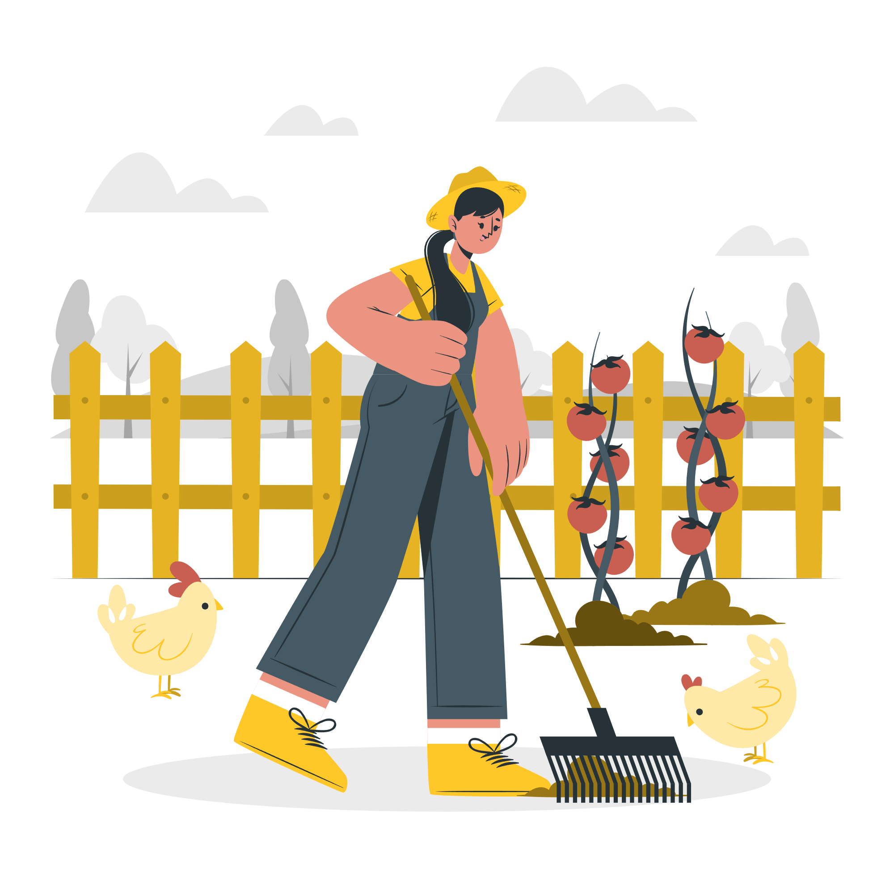

Agricultura e o Desenvolvimento Sustentável.
A Sustentabilidade é a abertura para o futuro!
Conceitos básicos.

A agricultura sustentável é um sistema de produção agrícola que busca atender às necessidades presentes sem comprometer os recursos naturais. Os seus conceitos básicos envolvem o uso responsável dos recursos naturais, como solo, água e energia, além da proteção da biodiversidade e adoção de métodos orgânicos, rotação de culturas e técnicas de conservação do solo.
Práticas agrícolas sustentáveis.
As práticas agrícolas sustentáveis incluem o uso de adubos orgânicos, controle biológico de pragas, agricultura de precisão, agroflorestas e sistemas de irrigação eficientes. Essas abordagens promovem a conservação dos recursos naturais e a produção de alimentos saudáveis.
Agricultura eficiente e menos prejudicial.

Para tornar a agricultura mais eficiente e menos prejudicial, é importante adotar práticas como o uso de técnicas de conservação do solo, rotação de culturas, agroecologia, irrigação de precisão, manejo integrado de pragas e uso responsável de fertilizantes e pesticidas. Além disso, o investimento em tecnologias como sensores e inteligência artificial pode otimizar o uso de recursos e reduzir o impacto ambiental.